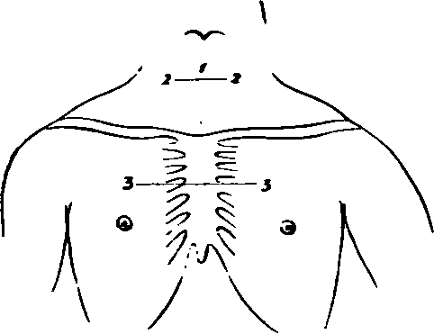

A Dissection To Expose The Anterior Surface Of The Trachea
Description
This section is from the book "A Manual Of Dissections Of The Human Body", by R. E. Carrington. Also available from Amazon: A manual of dissections of the human body.
A Dissection To Expose The Anterior Surface Of The Trachea
Position
Body supine, a block under the shoulders, and the head hanging back.
I. Skin Incisions
(1.) Along the median line from the Cricoid cartilage to the level of the lower border of the third Costal cartilages at their junction with the Sternum. (2.) A transverse incision at the upper end for one inch on either side. (3.) A transverse incision at the lower end for three inches on either side. Reflect the flaps outwards and expose—
1. The superficial fascia.
2. The Platysma muscles over the inner ends of the Clavicles.
3. Branches of the Anterior Jugular veins perforating at a variable distance down the neck.
4. The inferior branch of the Superficia Cervical nerve at the lower part of the neck.
5. Twigs of the Supra-sternal and Supra-clavicular branches of the Cervical Plexus.
6. The communication of the Supra-clavicular with the second Anterior Cutaneous nerve.
7. Branches of the supra-scapular artery passing over the Clavicle with them.
No. 8.
8. Cutaneous branches from the Inferior Thyroid artery at the lower part of the neck.
9. The first Anterior Cutaneous artery from the Internal Mammary sending small filaments to join them.
10. The Anterior Cutaneous arteries, veins, and nerves of the upper two spaces.
11. The anterior branch of the second Lateral Cutaneous nerve, when present.
12. Its corresponding artery.
II
Remove all the preceding structures and expose the fascia lata of the neck and chest.
In taking away the Platysma, the Supra-clavicular and Supra-sternal nerves will be found beneath it above the Clavicle.
III. Remove The Fascia Lata
In the middle line in front this will be found to present two layers, one between the anterior borders of the Sterno-mastoidei, and one between the corresponding borders of the Sterno-hyoidei. Some fat is found between these layers.
There will now be exposed—
1. The inner portions of the Clavicles on either side, and the first two pieces of the Sternum; the latter covered by the aponeurotic expansion of the Pec-torales muscles.
2. The Sterno-mastoidei muscles attached to the Clavicles.
3. The Sterno-hyoidei muscles.
4. Small portions of the Sterno-thyroidei muscles outside the preceding.
5. Small portions of the Omo-hyoidei muscles at the upper and outer parts.
6. Small branches of the Supra-scapular arteries over the inner parts of the Clavicles.
7. Small branches of the Inferior Thyroid arteries above the Sternal notch.
8. Further portions of the Anterior Jugular veins, and a transverse branch of communication between the two, above the Sternal notch.
9. The Pectorales majores muscles. 10. Lymphatics.
IV
Remove now— a. The Sterno-mastoidei muscles within the limits of the skin incisions.
b. The Sterno-hyoidei muscles.
c. The Sterno-thyroidei muscles.
In doing this there will be seen immediately beneath. the first muscle on each side—
1. A further portion of the Anterior Jugular vein.
2. The nerves to the Sterno-hyoidei and Sterno-thyroidei from the Ansa Hypoglossi entering the outer borders.
d. Cut away the Pectorales muscles within the limits of the dissection. There will now be exposed from above downwards—
1. Processes of deep Cervical fascia beneath the Sternothyroidei muscles running to the Pericardium.
2. The lobes and isthmus of the Thyroid body.
3. The Trachea in the median line.
4. The (Esophagus at the root of the neck on the left side.
5. The Inferior Thyroid plexus of veins.
6. Branches of the Inferior Thyroid arteries.
7. The arteria Thyroidea ima when present.
8. The inner margins of the Scaleni antici muscles on either side.
9. The Omo-hyoidei muscles, crossing the Scalenus muscle at the upper part.
10. The Phrenic nerve on the left Scalenus anticus.
11. Small portions of the first part of the Subclavian artery on both sides with the Thyroid axis, and the commencement of the Inferior Thyroid, Transverse Cervical, and Supra-scapular branches.
12. On the left side, the Carotid sheath, and this being opened, the Internal Jugular vein, covering this part of the Common Carotid artery. The Vertebral vein is also seen.
13. On the right side, the Common Carotid artery and Internal Jugular and Vertebral veins will be both exposed.
14. The Thoracic and right Lymphatic ducts, and lymphatic vessels and glands.
15. The right Vagus nerve, between the Carotid artery and Jugular vein, next crossing the Subclavian artery.
16. The right Ansa Vieusenii.
17. The first three ribs, and Costal cartilages.
18. The inner portions of the Subclavii muscles, between the first rib and the Clavicles, covered by the Costo-coracoid membranes.
19. The fascia of the External Intercostales.
20. The Internal Intercostales muscles showing through it.
21. The anterior ends of the External Intercostales.
22. The Anterior Sterno-clavicular and Inter-clavicular ligaments, and Anterior Costo-sternal ligaments.
V
Saw through the Clavicles, divide the upper three ribs at the outer limit of the skin incisions, and saw through the Sternum at the lower level of the third cartilages. Remove the included piece of chest-wall, with the following structures— a. The origins of the Sterno-hyoidei and Thyroidei muscles.
b. The External and Internal Intercostal muscles.
c. The Triangulares sterni muscles.
d. The Internal Mammary arteries and veins.
e. The Intercostal nerves, arteries, and veins of the upper two spaces.
f. The Subclavii muscles will be divided at their inner portions.
g. The parietal layers of the Pleura. A. A few lymphatic glands between the Pleura and Sternum.
The Lungs will be found to be retracted on either side, and there will be now exposed—
1. Areolar tissue, fat, and lymphatics of the anterior Mediastinum, which should be cleared away.
2. The Trachea in the median line.
3. The right and left Internal Jugular veins, forming the right and left Innominates, and a small portion of the Superior Vena Cava, if distended. Entering the right and left Innominates are the Inferior Thyroid and Vertebral veins coming from above. The Superior Intercostal veins from below, and the out ends of the Internal Mammary branches. These veins should now be removed, and there will then be exposed—
4. The arch of the Aorta giving off the Innominate branch on the right, which crosses over the Trachea, and bifurcates above into right Subclavian, and Common Carotid branches. The left Common Carotid and left Subclavian branches passing upwards and to the left. The Vertebral artery will be seen leaving the latter on the removal of its vein.
5. Crossing the arch of the Aorta are, from within outwards— a. The left Phrenic nerve.
b. The Inferior Cardiac branch of the left Vagus.
c. The Cardiac branch of the left superior Cervical ganglion.
d. The left Vagus giving off its Recurrent branch.
e. The left Superior Intercostal vein.
6. The left Pulmonary artery and the Ductus Arteriosus.
7. The right Vagus nerve passing beneath the Innominate artery. Its Recurrent branch is seen turning round the Subclavian artery, and its Inferior Cardiac branch lying on the outer side, and then passing beneath the Innominate.
8. The left Vagus is seen above, between the Common Carotid and Subclavian arteries, and below passing beneath the left branch of the Pulmonary artery.
9. The right and left Ansæ Vieusenii crossing the first parts of the Subclavian arteries.
10. Part of the superficial Cardiac plexus.
11. The right and left Phrenic nerves in front of the corresponding roots of the Lungs, and the Comes nervi Phrenici arteries with them.
12. The anterior surface of the Pericardium, with some small arteries from the Internal Mammary, and small veins running to the left Superior Intercostal and Innominate veins.
I
Remove now— a. The isthmus and exposed parts of the lobes of the Thyroid gland. In doing this there will be taken away—
1. The Superior and Inferior Thyroid arteries.
2. The Middle and the remaining portions of the Inferior Thyroid veins.
3. Branches of nerves from the middle Cervical ganglion.
4. Open the Pericardium.
c. Divide the Aorta between Innominate and left Carotid branches, turn the ends right and left, and fix them.
There will now be exposed— The whole length of the Trachea from its origin to its bifurcation. And the following additional structures—
1. Further portions of the Common Carotid arteries in the neck.
2. The (Esophagus more clearly at the root of the neck on the left side.
3. The whole of both Recurrent Laryngeal nerves.
4. A further portion of the Aortic arch.
5. The Pulmonary artery and its bifurcation.
6. The right Auricle and appendix, the tip of the left Auricular appendix, the Auriculo-ventricular groove, the upper part of the right Ventricle, and the commencement of the right and left Coronary arteries.
7. A further portion of the superficial Cardiac plexus of nerves.
8. The deep Cardiac plexus lying upon the bifurcation of the Trachea, with its radicles entering it from above.
Continue to:
- prev: A Dissection Of The Internal Mammary Artery
- Table of Contents
- next: A Dissection To Expose The Vena Azygos Major